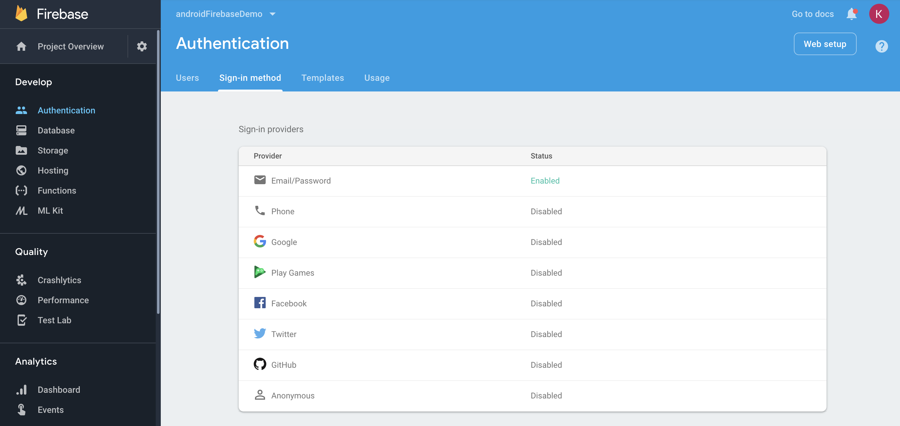
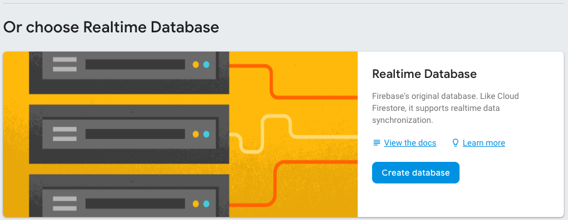

GitHub URL: https://github.com/kylelrichards11/firebaseDemoStarter.git
In Android Studio, go to File -> New -> Project from Version Control -> Git. Paste the GitHub URL from above into the window that opens and click "Clone." In any configuration windows that pop up, click "Next" and then "Finish."
This step can also be completed through the Android Studio Welcome Window or through the terminal (using git clone) if desired.
To use Firebase, log in here https://console.firebase.google.com/u/0/ with your Google account.
Then, navigate to Android Studio. From the toolbar, click Tools > Firebase as shown below.
Then, click Authentication > Email and password authentication.
Follow step one to connect your app to Firebase.
Then, in your Project build.gradle, add the following dependency:
classpath 'com.google.gms:google-services:4.0.1'
Then, in your App build.gradle, add the following dependencies:
implementation 'com.google.firebase:firebase-core:16.0.5'
implementation 'com.google.firebase:firebase-database:16.0.5'
implementation 'com.google.firebase:firebase-auth:16.0.5'
Finally, add this line at the very bottom of the app build.gradle:
apply plugin: 'com.google.gms.google-services'
This covers the dependencies for authentication and database!
First, we need to enable authentication in our Firebase Console. In the firebase console, click on the Authentication tab on the left. Click on the Sign-In Method tab. In the Sign-in providers list, enable Email/Password.

In SignUpActivity.java, get an instance of FirebaseAuth by adding the following at the top of the class:
private FirebaseAuth mAuth;
Then initialize it in the onCreate() method:
mAuth = FirebaseAuth.getInstance();
Find the registerNewUser() function, and add the following:
mAuth.createUserWithEmailAndPassword(email, password).addOnCompleteListener(this, new OnCompleteListener<AuthResult>() {
@Override
public void onComplete(@NonNull Task<AuthResult> task) {
if (task.isSuccessful()) {
goToMainActivity();
}
else {
TextView t = (TextView)findViewById(R.id.signUpError);
t.setText(task.getException().getMessage());
}
}
});
This will create a user in Firebase with the entered email and password from the UI. It will also check if the sign-up was successful. On success, it will go to the Main Activity so that the user can interact with the app. On failure, an error message will be displayed to the user.
In LoginActivity.java, get an instance of FirebaseAuth again and initialize it in the onCreate() method.
Then, in the logInUser() function, add the following:
mAuth.signInWithEmailAndPassword(email, password).addOnCompleteListener(this, new OnCompleteListener<AuthResult>() {
@Override
public void onComplete(@NonNull Task<AuthResult> task) {
if (task.isSuccessful()) {
goToMainActivity();
} else {
TextView t = (TextView)findViewById(R.id.loginError);
t.setText(task.getException().getMessage());
}
}
});
This will sign the user in with the specified email and password. If the user does not exist, or the email/password is wrong, Firebase will throw an error and the user will be notified.
Next, find the onStart() Activity Lifecycle Callback, and add the following:
FirebaseUser currentUser = mAuth.getCurrentUser();
// If we are already logged in, there is no need to login again.
if(currentUser != null) {
goToMainActivity();
}
This checks if the user is already logged in. If so, we navigate to the main activity.
Finally, we need to allow the user to sign out. Go to the MainActivity.java file, and find the onClickSignOutButton() function. Add the following:
FirebaseAuth.getInstance().signOut();
Build your code and run the app. In the main page of the app, click the "Sign Up" button. Fill in an email, password, and favorite color for a user and click the "Sign Up" button again. This should register a new user. Then, go back to the Firebase Console. Under the Users tab, your new user should appear in the list!
If your app is staying on the sign up screen and no error message is showing up, check android studio for this error.
firebaseinstanceid token retrieval failed service not available
If you have this error, your app may have lost connection to your Firebase project. Try uninstalling the app and turning off the AVD. Then run your app again and it should reconnect.
In FirebaseWrapper.java, navigate to the getUserRef() function. Delete any existing code within the function, and add the following:
FirebaseUser currentUser = mAuth.getCurrentUser();
String currentUserID = currentUser.getUid();
String path = currentUserID + '/' + key;
return database.getReference(path);
This will get a unique string from Firebase that acts as the key for an entry in the database.
In the writeToUser() function within the same file, add the following:
DatabaseReference ref = getUserRef(key);
ref.setValue(val);
This will create a database reference from the unique identifier we got in the getUserRef() function. It will also set the value, which updates the entry in Firebase.
Then, in SignUpActivity.java, get an instance of FirebaseWrapper, and then initialize it in the onCreate() function.
private FirebaseWrapper firebaseWrapper;
In onCreate() add the following line:
firebaseWrapper = new FirebaseWrapper();
In the registerNewUser() function within the same file, add lines calling the writeToUser() function we edited earlier. The function should look like this:
mAuth.createUserWithEmailAndPassword(email, password).addOnCompleteListener(this, new OnCompleteListener<AuthResult>() {
@Override
public void onComplete(@NonNull Task<AuthResult> task) {
if (task.isSuccessful()) {
firebaseWrapper.writeToUser("email", email);
firebaseWrapper.writeToUser("favoriteColor", color);
goToMainActivity();
}
else {
TextView t = (TextView)findViewById(R.id.signUpError);
t.setText(task.getException().getMessage());
}
}
});
This will write a new user to the realtime database when a user signs up.
In MainActivity.java, get an instance of FirebaseWrapper, and initialize it in the onCreate() function.
In the same file, go to the watchUserKey() function. Add the following code:
DatabaseReference ref = firebaseWrapper.getUserRef(key);
ref.addValueEventListener(new ValueEventListener() {
@Override
public void onDataChange(DataSnapshot dataSnapshot) {
final String value = dataSnapshot.getValue(String.class);
setColorText(value);
}
@Override
public void onCancelled(DatabaseError error) {
setColorText(error.getMessage());
}
});
The first line specifies which data we're looking at to see if it changes. In this case, we want to know if the color field gets changed. The rest of the code contains two override functions. The most important one is onDataChange(), which is triggered when the value attached to the specified key changes. The onDataChange() function will then update the string contained within the TextView, as displayed to the user. The onCancelled() override function will trigger when there is an error, at which point it simply displays the error message to the user.
Now, go to the onClickSubmitButton() function. At the top of the if statement, add the following:
firebaseWrapper.writeToUser(colorField, color);
Here, we update the user's favorite color in the database based on their input string.
Go to the Firebase console. On the left-hand side menu, click Database. Scroll down and under Realtime Database, click the Create database button. Select test mode, and click enable. This will open up a page displaying data. For now, it is empty. IMPORTANT: Do not close this page because it will delete your database since it's empty.

Now, in Android Studio, build your project and run it. Sign out if you are still signed in, and then sign up a new user with an email, password, and favorite color. After signing up, go back to the Firebase console, and see that your user has been added!
To change your user's favorite color, go back to your app and input a new color as prompted. You should see the data change right away on the app, and you can see it change in the Firebase console as well.
Then, in the Firebase console, you can also click on the favoriteColor data field and change it (hit enter after changing data). You will be able to see that data change reflected in your application.
You now have a functioning Firebase Realtime Database!
To learn more about Firebase, visit the following pages:
https://firebase.google.com/docs/guides/
https://firebase.google.com/docs/database/admin/retrieve-data
https://firebase.google.com/docs/auth/android/start/